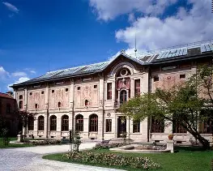
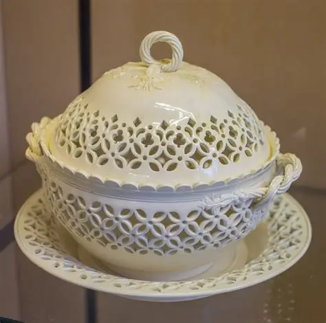
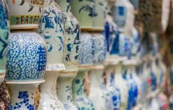
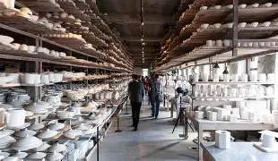

Explore l’univers fascinant de la porcelaine de Limoges, une tradition française reconnue dans le monde entier.
La porcelaine de Limoges est une porcelaine fine produite autour de la ville de Limoges, en France, depuis la fin du XVIIIᵉ siècle. Elle est réputée pour sa blancheur, sa finesse, sa translucidité et sa qualité exceptionnelle, ce qui en fait un symbole de l’artisanat français.


L’histoire commence après la découverte d’un gisement de kaolin, matière première essentielle, non loin de Limoges vers 1768. Cette découverte a permis de produire une porcelaine dure, similaire à celle fabriquée en Chine, et de développer une industrie artisanale et artistique très prospère.
Au XIXᵉ siècle, Limoges est devenue le centre principal de production de porcelaine en France, supplantant même Paris pour cette industrie. La ville abritait de nombreuses manufactures renommées comme Bernardaud et Haviland.

Aujourd’hui encore, la porcelaine de Limoges est un symbole de savoir-faire, employée pour l’art de la table, les objets décoratifs et les pièces d’art, admirée tant pour sa technique que pour sa beauté.